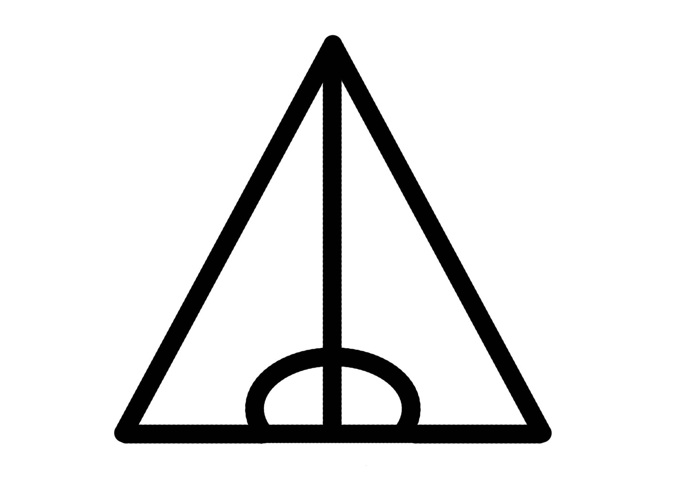

Posts
This is where I'll be posting all my things!
My favorite characters from Harry Potter:

10. Neville Longbottom
9. Harry Potter
8. Percy Weasley
7. Andromeda Tonks
6. Narcissa Malfoy
5. Regulus Black
>4. Newt Scamander
3. Astoria Malfoy
2. Scorpius Malfoy
1. >Draco Malfoy
Harry Appreciation
Harry deserves more appreciation for everything he did despite everything he went through. From being abused by the Dursleys to having Voldemort hunt him, you can't deny that he certainly went through a lot of horrible things in his life, and yet, he still chose to be a good person, even sometimes to those who didn't treat him well.
He saved Dudley Dursley from the dementors, saved Draco, who buullied him for years, in the Room of Requirement, and he even gave Voldemort the chance to redeem himself (which he obviously didn't end up doing)!
He most certainly was a very kindhearted and brave person who, while he wasn't always right, did always strive to do the right thing, even when it put himself in danger.